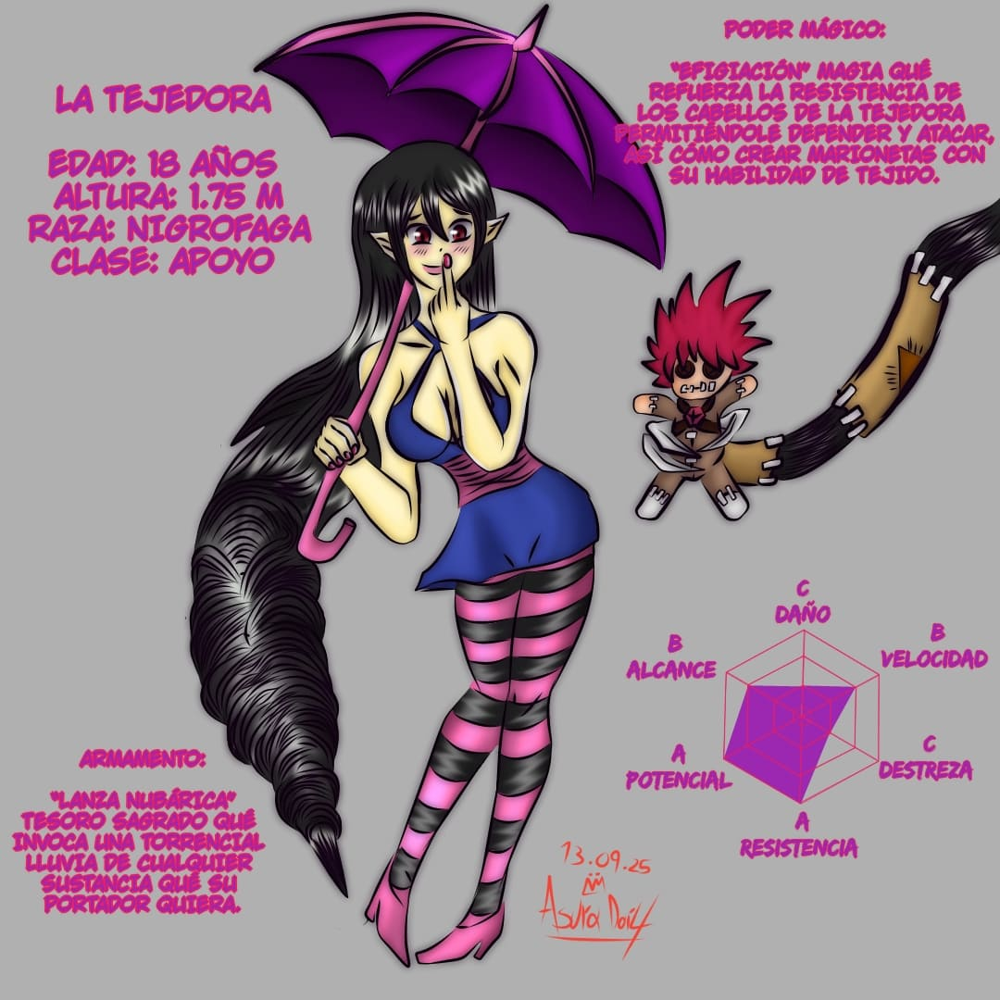
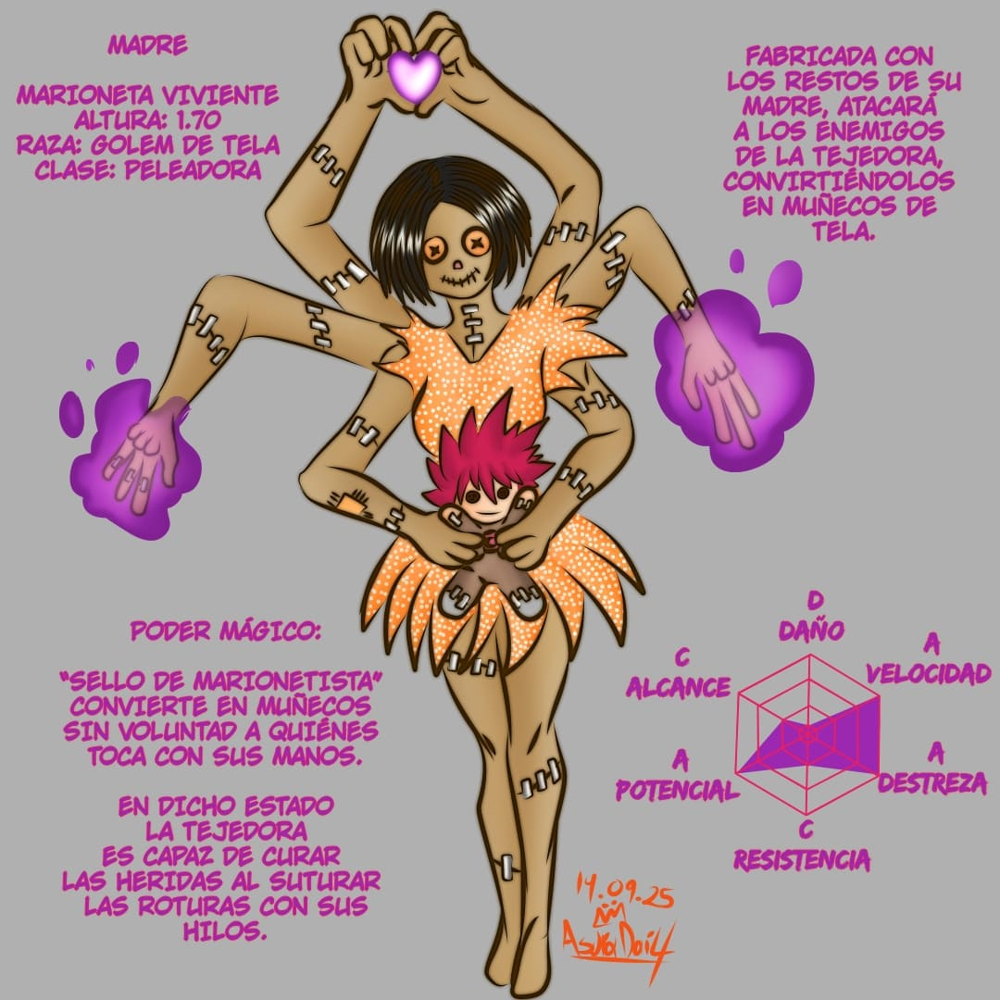
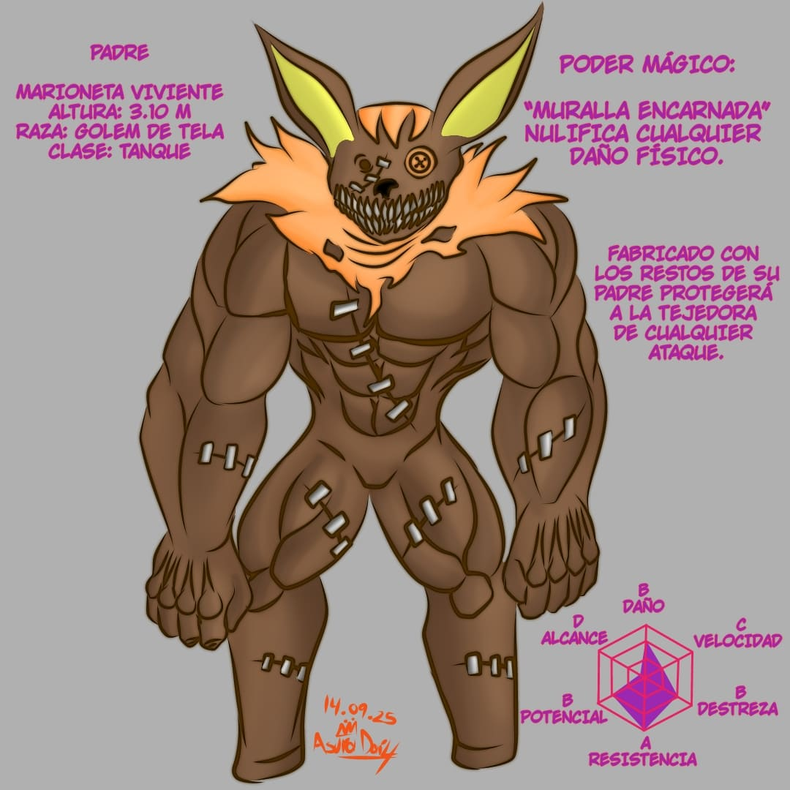
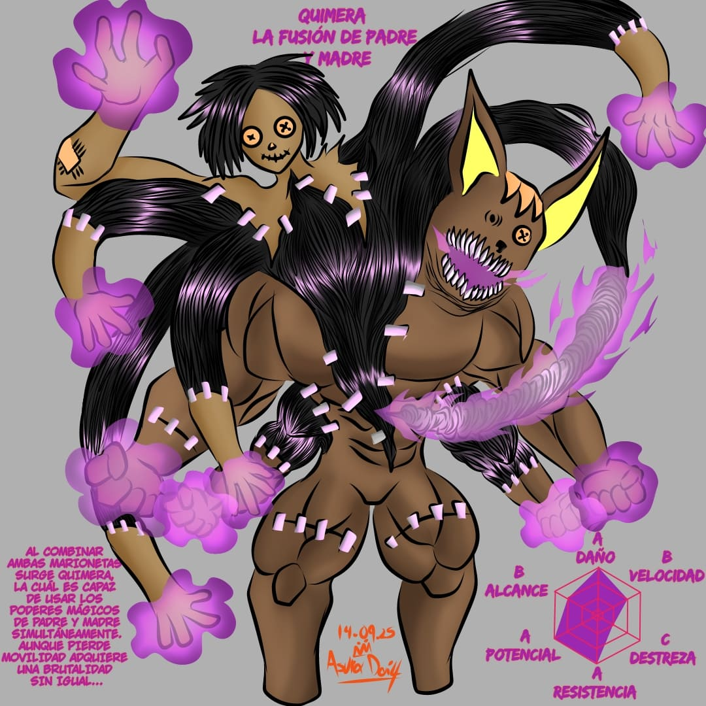

La Tejedora perteneciente a
la raza de los “Nigrofagos” especie que se destaca por
su alta regeneración y voracidad. Son devoradores de
almas por lo que son vistos como monstruos peligrosos,
sin embargo su civilización va en declive por su infrapoblación.
Tras la muerte de su familia “La tejedora” se dirigió a
la ciudad de los guerreros con el fin de encontrar a
un consorte poderoso para cimentar su legado familiar. Participó
activamente en la batalla contra el Hecatónquiro del bosque blanco.
Enfrentando a la peligrosa “Engendradora”.
Su poder mágico fue nombrado “Efigiación” y le permite
manipular su cabello tanto para la defensa como el ataque además
que posee un elevado nivel de ocultación por lo que sus
filamentos son casi imperceptibles incluso para usuarios
mágicos competentes. Con la pérdida de sus padres usó sus
restos en dos marionetas (Padre y Madre) las cuales conservan
sus poderes mágicos que tuvieron en vida “Muralla encarnada” y
“Sello del marionetista” respectivamente.
También puede crear múltiples títeres menos eficaces pero que
cumplen labores de exploración o rastreo al poder acelerar su
crecimiento capilar no hay un límite en la cantidad de marionetas
que puede crear aunque el tiempo de manufacturación depende del
tamaño de los mismos.
Como armamento porta la “Lanza Nubárica” la cual le permite convocar
una tormenta compuesta de la sustancia que desee, sea agua, ácido,
magma etc. La cual cubre un área de 25 km² Su forma es la de un
paraguas y al replegarse puede usarse como lanza, perteneció a uno
de sus ancestros y su poder mágico quedó impregnado en la lanza,
pasando de generación en generación. Eso es lo que ocurre con las
pertenencias de los usuarios mágicos que al usar durante mucho
tiempo su poder queda impregnado en sus pertenencias.